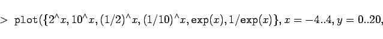
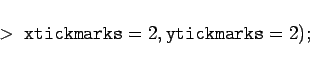
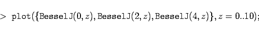
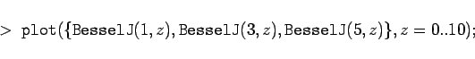
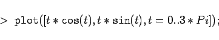
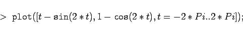
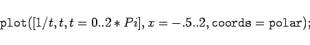

Inhalt Index DeskTop Bronstein

 Computeralgebrasysteme Graphik in Computeralgebrasystemen Graphik mit Maple Zweidimensionale Graphik
Computeralgebrasysteme Graphik in Computeralgebrasystemen Graphik mit Maple Zweidimensionale Graphik


Die folgenden Graphiken wurden mit Maple erzeugt, danach mit Coreltrace vektorisiert und mit Coreldraw! nachbearbeitet. Dies war notwendig, weil die unmittelbare Konversion einer Maple-Graphik in eine EPS-Datei nur sehr kleine Liniendicken ergibt und damit unansehnliche Bilder liefert.
Mit der Konstruktion
|  | (20.94a) |
|  | (20.94b) |
erhält man die in der folgenden Abbildung dargestellten Exponentialfunktionen.
Ähnlich liefert der Befehl
Mit den beiden Aufrufen
|  | (20.95a) |
und
|  | (20.95b) |
erhält man jeweils die ersten drei BESSEL-Funktionen J(n,z) mit geradem n (erste Abbildung) und mit ungeradem n (zweite Abbildung).
In ähnlicher Art und Weise lassen sich die anderen in Maple vordefinierten speziellen Funktionen darstellen.
Mit dem Aufruf
|  | (20.96a) |
erhält man die in der folgenden Abbildung dargestellte Kurve.
Auf die folgenden zwei Aufrufe liefert MAPLE eine trochoidenähnliche Schleifenfunktion
(vgl. verkürzte Trochoide) bzw. eine hyperbolische Spirale.
|  | (20.96b) |
|  | (20.96c) |
Durch die Einfügung der Option in die Anweisung interpretiert Maple die Parameterdarstellung als Polarkoordinaten.